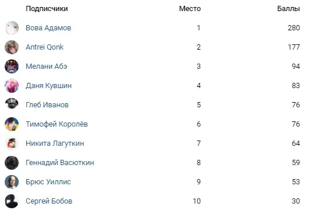

Итоги лояльности
ВКонтакте
👨💻Пришло время подвести итоги и [https://vk.com/@criticssteam-programma-loyalno…
2 августа 2020 · №298 в выгрузке стены · оригинал во ВКонтакте ↗

#ИтогиЛояльности@criticssteam #5
👨💻Пришло время подвести итоги и [https://vk.com/@criticssteam-programma-loyalnosti|программы лояльности].
Безоговорочное первое место сегодня занимает и приз забирает:
👑 [id119602395|Вова Адамов]!
А [https://vk.com/@criticssteam-sistema-titulov|титул Лояльности] получают, кроме победителя, еще те, кто занял следующие два места:
🥈 [id469634406|Antrei Qonk]!
🥉[https://vk.com/mertviy_levitiruyuchiy_headcrab|Мелани Абэ]!
&&& Всем огромное спасибо за проявление активности в нашем сообществе,
стараемся только для ваc, и если честно, то мы вас любим &&&
А вот и ТОП-10»
👨💻Пришло время подвести итоги и [https://vk.com/@criticssteam-programma-loyalnosti|программы лояльности].
Безоговорочное первое место сегодня занимает и приз забирает:
👑 [id119602395|Вова Адамов]!
А [https://vk.com/@criticssteam-sistema-titulov|титул Лояльности] получают, кроме победителя, еще те, кто занял следующие два места:
🥈 [id469634406|Antrei Qonk]!
🥉[https://vk.com/mertviy_levitiruyuchiy_headcrab|Мелани Абэ]!
&&& Всем огромное спасибо за проявление активности в нашем сообществе,
стараемся только для ваc, и если честно, то мы вас любим &&&
А вот и ТОП-10»